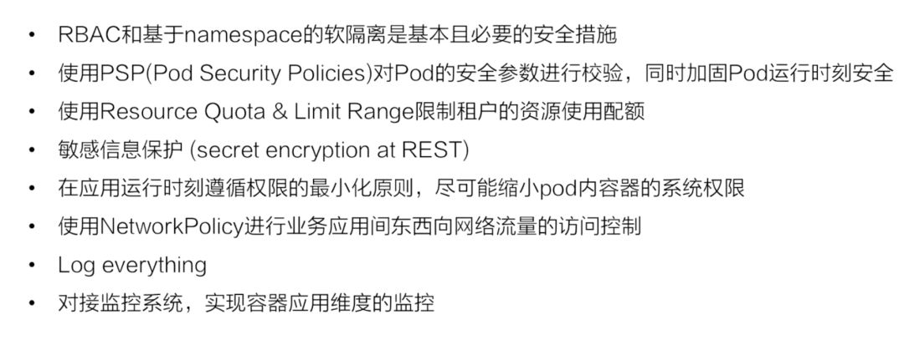

K8S安全加固建议 [2] #
-
Kubernetes Pod 安全
- 使用构建的容器，以非 root 用户身份运行应用程序
- 在可能的情况下，用不可变的文件系统运行容器
- 扫描容器镜像，以发现可能存在的漏洞或错误配置
- 使用 Pod 安全政策来执行最低水平的安全，包括:
防止有特权的容器
拒绝经常被利用来突破的容器功能，如 hostPID、hostIPC、hostNetwork、allowedHostPath 等
拒绝以 root 用户身份执行或允许提升为根用户的容器
使用安全服务，如 SELinux®、AppArmor® 和 seccomp，加固应用程序，防止被利用。 @
-
网络隔离和加固
- 使用防火墙和基于角色的访问控制（RBAC）锁定对控制平面节点的访问
- 进一步限制对 Kubernetes etcd 服务器的访问
- 配置控制平面组件，使用传输层安全（TLS）证书进行认证、加密通信
- 设置网络策略来隔离资源。不同命名空间的 Pod 和服务仍然可以相互通信，除非执行额外的隔离，如网络策略 @
- 将所有凭证和敏感信息放在 Kubernetes Secret 中，而不是配置文件中。使用强大的加密方法对 Secret 进行加密
-
认证和授权
- 禁用匿名登录（默认启用）
- 使用强大的用户认证
- 创建 RBAC 策略以限制管理员、用户和服务账户活动 @
-
日志审计
- 启用审计记录（默认为禁用）
- 在节点、Pod 或容器级故障的情况下，持续保存日志以确保可用性
- 配置一个 metric logger
-
升级和应用安全实践
- 立即应用安全补丁和更新
- 定期进行漏洞扫描和渗透测试
- 当组件不再需要时，将其从环境中移除
K8S安全加固最佳实践 [1] #

Kubernetes 安全机制 [6] #
K8S API 安全 @限制访问Kubernetes API #
- 所有API交互使用TLS
- API 认证
- Kubernetes支持的请求认证方式
- Basic 认证（不建议）
- X509 证书认证
- Bearer Tokens(JSON Web Tokens)
Service Account / OpenID Connect / Webhooks
- Kubernetes支持的请求认证方式
- API 鉴权 - RBAC @使用基于角色的访问控制来最小化暴露
- 三要素， 权限粒度
- Role， RoleBinding
- ClusterRole， ClusterRoleBinding
- Default ClusterRoleBinding(预置角色)
- 三要素， 权限粒度
容器能力限制 #
- 限制容器特权
- Security Context
限制容器运行时的用户、用户组，对容器特权进行限制 - PSP(Pod Security Policy)
会在 1.25 之后被后面提到的 pod security admission webhook 替代
- Security Context
- 限制资源用量
- Resource Quota
- Limit Range
- 限制资源访问
- network policy @使用网络安全策略来限制集群级别的访问
网络隔离策略，设置黑名单或者白名单，为 namespace 去分配一独立的 IP 池
- network policy @使用网络安全策略来限制集群级别的访问
- 限制调度节点
- node selector
- Taint
- 限制容器能够调度的节点，实现一定程度的物理隔离
安全增强 #
- 审计日志
- pod security admission webhook GateKeeper 开源
- Key Management Service 借助 KMS 来加密 etcd 中的数据，在容器运行时进行解密
安全容器 [1] #
- kata container(轻量级虚拟机)
- gVisor(大部分是userspace的调用)
参考：
- CNCF × Alibaba 云原生技术公开课
第27 章 ： Kubernetes安全之访问控制
第29 章 ： 安全容器技术 - Kubernetes 加固指南 ***
- Kubernetes in Action - 12章， 13章 （未）
- 记一次Kubernetes中严重的安全问题 未
- Kubernetes 最佳安全实践指南 未
- K8s 安全策略最佳实践 文字稿 火线沙龙第24期——K8s 安全策略最佳实践 视频
- 云原生安全产品 NeuVector 简介 未